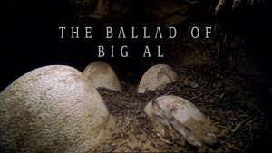
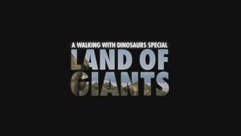
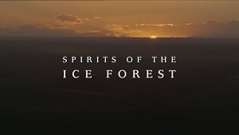
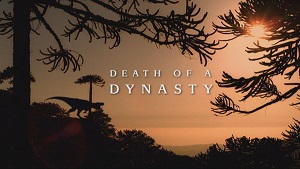
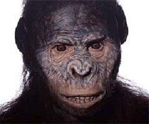

Walking with..., also referred to as Walking with Prehistoric Life, is a media franchise created by Tim Haines and Jasper James centered on a collection of documentary series produced by the BBC and created by the independent production company Impossible Pictures. The series of documentaries began with Walking with Dinosaurs (1999), which was followed by four more series; Walking with Beasts (2001), Walking with Cavemen (2003), Sea Monsters (2003) and Walking with Monsters (2005). Dinosaurs, Beasts and Monsters form an overarching series within the franchise dubbed the Trilogy of Life. In addition to the main series, three special episodes have been produced; The Ballad of Big Al (2000), The Giant Claw (2002) and Land of Giants (2003). The aim of the installments in the franchise is to recreate extinct animals and present them in the same way modern animals are presented in wildlife documentaries. The various extinct animals were realized throughout the franchise using computer graphics and animatronics.
MAIN SERIES
The main series consist of 4 mini-series spanning across multiple time periods as viewers get to observe the constant struggles of prehistoric species in order to survive an everchanging world and what evolutionary changes they went through to adapt to their current environments.
Walking With Dinosaurs
1999
Walking With Beasts
2001
Walking With Cavemen
2003
Walking With Monsters
2005
SPECIALS
The specials include a one-shot, a two-parter and three-parter mini series which focus more on several individual creatures or time periods following an overall plot.

The Ballad of Big Al
2000

Chased by Dinosaurs
2002 and 2003
Sea Monsters
2003
MEET THE NARRATORS
Throughout the series and special, the viewers will be accompanied by various narrators as they guide you through all the happenings on screen, much like a modern day documentary about wildlife. Not all narrators appear in person alongside prehistoric specimens, but they nonetheless provide valuable insights about almost everything about these prehistoric periods.
Kenneth Banargh
Kenneth Branagh is a British actor who served as the narrator of Walking with Dinosaurs, Walking with Beasts, and Walking with Monsters. He also narrated the one-off special of Walking with Dinosaurs called The Ballad of Big Al.
Nigel Marven
Nigel Marven is a British wildlife presenter, television producer, author and ornithologist. He has presented in several Impossible Pictures programmes, which includes Chased by Dinosaurs, Sea Monsters. He has also co-written the companion book for Sea Monsters: Prehistoric Predators of the Deep.
Robert Winston
Robert Winston is a British professor, medical doctor, scientist, television presenter. He appeared in Walking with Cavemen.
Karen Hayley
Karen Hayley is a British actress and writer who has been published in Velocity, an anthology of contemporary poetry, published by Black Spring Press, and performed with the writers John Cooper Clarke and Suede (band) vocalist Brett Anderson. As an actress, she has been a member of the BBC Radio Rep Company, appeared in the film An Ideal Husband , and on the Bafta winning programme Sea Monsters.
WALKING WITH DINOSAURS
Walking with Dinosaurs is a six-part dinosaur television documentary mini-series that was produced by the BBC, narrated by Kenneth Branagh, and first aired in the United Kingdom in 1999. The series uses computer-generated imagery and animatronics to recreate the reign of the dinosaurs, beginning in the late Triassic period and concluding in the late Cretaceous period at the K-T boundary mass extinction event, 66 million years ago.
LIST OF EPISODES
New Blood: This episode follows life in the late Triassic period in Arizona. It concentrates on the harsh conditions Triassic life is put through and the end of the episode emphasizes that the age of the dinosaurs has begun.
Time of the Titans: This episode follows the diverse Jurassic megafauna in North America. It mainly concentrates on the lives of a adolescent female Diplodocus and her constant fight for survival against predators and even her own habitat after hatching.
Cruel Sea: This episode, like the previous episode, focuses on life in the late Jurassic period in Oxfordshire. It concentrates on the environment the inhabitants of late Jurassic Oxfordshire live in. Like the previous episodes, this episode emphasizes the Jurassic megafauna and their success.
Giant of the Skies: This episode follows the lesser known yet prominent group of reptiles that dominated the skies during the Mesozoic era, the pterosaurs. It concentrates on an old male Ornithocheirus and his epic journey to the mating grounds.
Spirits of the Ice Forest: This episode is set in Antarctica during the middle Cretaceous period. It focuses on how dinosaurs survive in the harsh and cold conditions that are thrown at them.
Death of a Dynasty: This episode is set in the late Cretaceous, 65.5 million years ago in Montana. It focuses on the last in the lineage of dinosaurs and the K-T boundary mass extinction event.
WALKING WITH BEASTS
Walking with Beasts, also known as Walking with Prehistoric Beasts is a six-part television documentary produced by the BBC, narrated by Kenneth Branagh, and first aired in the United Kingdom in 2001. Like its predecessor, it recreates life in the Cenozoic Era by using a combination of both computer-generated imagery and animatronics, beginning from the Paleogene epoch and ending in the Late Pleistocene. However, the Miocene epoch and Palaeocene epoch are not included.
LIST OF EPISODES
New Dawn: The first episode focuses on the warm and tropical world of the early Eocene, 16 million years after the extinction of the non-avian dinosaurs. During this time, the mammals still have remained small, for there is little space for them to get back in the crampled conditions of the jungle.
Whale Killer: The second episode is set in late Eocene, when the polar caps froze over and drastically change the Earth's ocean currents and climate. It follows a Basilosaurus and how the world is changing into an ocean famine.
Land of Giants: The third episode takes place during the late Oligocene, in Mongolia, where there were seasonal rains followed by a long drought. It tells the story of a mother Indricotherium.
Next of Kin: The fourth episode takes place in the Great Rift Valley in northeastern Africa. It focuses around a tribe of small hominids known as Australopithecus.
Sabre Tooth: The fifth episode shows the strange fauna of the isolated continent of South America and explores the effects of the Great American Interchange, which had happened 1.5 million years earlier. The episode focuses on a male Smilodon, whose leadership of a pride is threatened by two males who are brothers and work together against him.
Mammoth journey: The sixth episode takes place during the last Ice Age. It starts in the peak of the summer. The central focus is the migration of the herd of mammoth.
WALKING WITH CAVEMEN
Walking with Cavemen, or Walking with Cavemen: With Robert Winston is a four-part British documentary film series about human evolution over the past 8 million years.
LIST OF EPISODES
First Ancestors: In the first episode, the story follows the famous Lucy and her relatives, as they first develop a leadership conflict following the death of the alpha male. It focuses on their evolved bipedality and sign of the developing humanity in these "apemen".
Blood Brothers: The second episode leaps forward to a time when Paranthropus boisei, Homo habilis and Homo rudolfensis coexist.
Savage Family: In the third episode, Homo ergaster is depicted as the first creature to master the art of tracking and begin to form into tribal societies.
The Survivors:The fourth episode talks about the mental evolution of the humans, as opposed to the physical in previous ones.
WALKING WITH MONSTERS
Walking with Monsters: Life Before Dinosaurs, or Before the Dinosaurs: Walking with Monsters is a three-part British documentary film series about life in the Paleozoic, bringing to life extinct arthropods, fish, amphibians, synapsids, and reptiles. It is narrated by Kenneth Branagh. The series draws on the knowledge of over 600 scientists and shows nearly 300 million years of Paleozoic history, from the Cambrian period (530 million years ago) to the Early Triassic period (248 million years ago).
LIST OF EPISODES
Water Dwellers: The first episode begins with an illustration of the giant impact hypothesis. It then jumps ahead to the Cambrian Explosion, showing the first diversification of life in the sea.
Reptile's Beginning: The episode features the Carboniferous, a time of giant invertebrates and the heyday of amphibians and early Permian period, featuring early mammal-like sail-backed reptiles.
Clash of Titans: The final episode features the Late Permian on the supercontinent Pangaea, which is covered by a vast and inhospitable desert. In this arid climate, early therapsids, which are described as more "mammal-like" than reptile, are shown fighting to survive.
THE BALLAD OF BIG AL
The Ballad of Big Al, also known as Allosaurus: A Walking with Dinosaurs Special is the first special in the Walking with Dinosaurs franchise. The story starts in the University of Wyoming Geological Museum, where a fossilized Allosaurus named Big Al is house. As his ghost roaming the museum, passing by his skeleton, the special moves back in time to 145 million years ago, to the Jurassic period.
CHASED BY DINOSAURS
Chased by Dinosaurs, orA Walking with Dinosaurs Special is a two-part British documentary film series featuring Nigel Marven and his "team of fellow explorers" as time-travellers who encounter dinosaurs in the wild. Most of the creatures were not featured in the original Walking with Dinosaurs series.
LIST OF EPISODES
The Giant Claw: In this episode Nigel tries to solve the mystery of who The Giant Claw is.
Land of Giants: In this episode Nigel tracks down the biggest dinosaur ever to live.
SEA MONSTERS
Sea Monsters: A Walking with Dinosaurs Trilogy, or Chased by Sea Monsters was a documentary trilogy that first aired on BBC One on 9 November 2003. This is the second Walking with... programme to star Nigel Marven and was the last Walking with... special to air. It is also the only programme to be narrated by Karen Hayley. The show is about Nigel Marven travelling back in time to visit the seven deadliest prehistoric seas. He travels to those time periods on a boat called The Ancient Mariner, a 24 metre long boat with a crew.
LIST OF EPISODES
Dangerous Seas: This episode marks the beginning of Nigel's quest as he travels back to the Ordovician, the Triassic and the Devonian.
Into the Jaws of Death: This episode starts with Nigel still in the Devonian escaping. It then moves on to the Eocene and continues to the Pliocene.
To Hell... and Back? : This episode starts with Nigel still in the Pliocene.It then moves on to the Jurassic and concludes in the Cretaceous, Hell's Aquarium.
CONTACT US
If there are questions you are having regarding the franchise in general, individual series, other installments that are not featured here, etc. Feel free to contact us by filling the slots below!